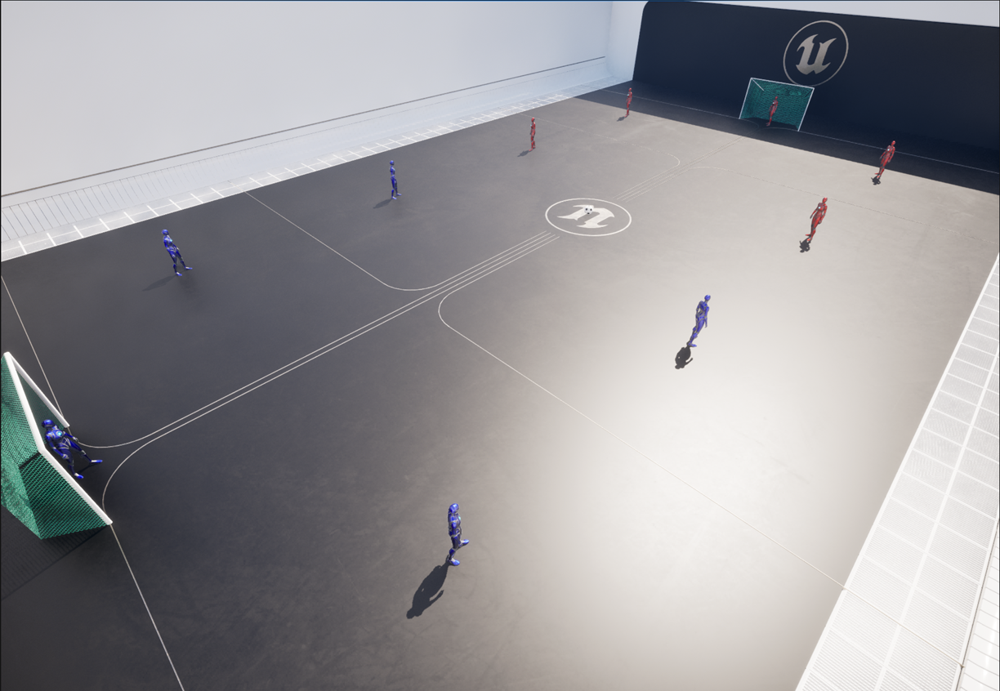

AIG Futsal
Artificial Intelligence for Games — 2025/2026 – 2nd Semester
1 Objective
The objective of this project is to develop a team of intelligent agents capable of playing 5-a-side Futsal. Each agent must be controlled by an AI controller built on top of the provided FutsalCharacterController base class.
Unlike a traditional Behavior Tree approach, this project requires the use of Unreal Engine 5 State Trees as the core decision-making mechanism for all agents.
The pitch where the intelligent agents train and compete is the following:

2 Rules
2.1 Character Classes
It is strictly forbidden to change any of the FutsalCharacter C++ code. The project provides the following C++ assets:
FutsalCharacter— base character class controlled by your AI controllerBlueTeamFutsalCharacterandRedTeamFutsalCharacter— extendFutsalCharacterfor each team. Cannot be changed.- Corresponding Blueprint classes (
BP_BlueTeamFutsalCharacter,BP_RedTeamFutsalCharacter) set skeletal meshes and colors. Cannot be changed.
2.2 Pitch and Ball
- The pitch walls are always in play — the ball bounces off boundaries (no out-of-bounds stoppages).
- The ball follows standard UE5 physics; no dribbling mechanic exists. Possession is determined by proximity.
- A goal is scored when the ball enters the goal trigger volume.
2.3 AITeams Folder
The AITeams folder is where students place their work. Each student should create a subfolder named after their student number containing all AI assets (State Trees, Team State components, controller Blueprints).
3 FutsalCharacterController
The FutsalCharacterController C++ class is the mandatory base class for your AI controller. Your controller inherits all implemented functionality from this class.
3.1 Inherited Events
/** Notifies the AI controller whether the possessed character can kick the ball */
UFUNCTION(BlueprintNativeEvent)
void CanKick(bool NewKickState);
virtual void CanKick_Implementation(bool NewKickState);
/** Notifies the AI controller that its team scored a goal */
UFUNCTION(BlueprintNativeEvent)
void GoalScored();
virtual void GoalScored_Implementation();
/** Notifies the AI controller that the opposing team scored a goal */
UFUNCTION(BlueprintNativeEvent)
void OpponentTeamGoalScored();
virtual void OpponentTeamGoalScored_Implementation();3.2 Available Actions
The only action that can be triggered on the character is Kick:
/** Kick the ball
* @param Pitch Height angle of the kick (degrees)
* @param Azimuth Horizontal direction to kick (degrees)
* @param Power Kick strength [0.0 – 1.0]
*/
UFUNCTION(BlueprintCallable, Category = "Futsal")
void Kick(float Pitch, float Azimuth, float Power);4 State Trees
This is the core requirement that differentiates this project from previous editions.
4.1 Behavior Trees vs. State Trees
State Trees are the modern UE5 replacement for Behavior Trees. Understanding the key differences is essential for this project:
| Feature | Behavior Trees | State Trees |
|---|---|---|
| Data storage | Separate Blackboard asset with global keys | Parameters and Context Data bound directly to Actor/Controller |
| Logic flow | Continuously ticking all nodes | Event-driven; states run on-demand via Transitions |
| Performance | Higher memory overhead from Blackboard keys | Lower overhead; data lives in actors or schema objects |
| Flexibility | Limited to what the Blackboard supports | Fully modular via UObject context and per-instance Parameters |
4.2 Mandatory: State Tree Controllers
All agent roles must be implemented using UE5 State Trees (not Behavior Trees). Roles are fixed at spawn based on each character’s starting position. Each role must have its own dedicated AI Controller and State Tree asset.
The three mandatory roles are:
Goalkeeper — BP_GoalkeeperController + GoalkeeperStateTree
GoalkeeperStateTree
├── Idle (position between ball and goal centre)
├── Intercept (move toward ball when in danger zone)
└── Distribute (kick to open teammate after gaining possession)Defender — BP_DefenderController + DefenderStateTree
DefenderStateTree
├── Mark (track nearest opponent)
├── Press (close down ball carrier)
└── Support (cover defensive space)Striker — BP_StrikerController + StrikerStateTree
StrikerStateTree
├── Attack (move toward ball)
├── Shoot (when CanKick == true and shooting angle is favourable)
└── OffBall (find open space / create passing lane)Students may extend or modify these structures, but all three roles must be implemented and distinct. The team formation (how many defenders and strikers) is left to the student.
5 Tournament
After the delivery deadline, matches will be run where the AI teams submitted by students compete for the title of AIG Futsal Champion. The result of this tournament reflects 10% of the project grade.
6 Report
The report must be written using the template provided on Moodle and must include:
- Description of the State Tree architecture for each role (Goalkeeper, Defender, Striker)
- Description of each State Tree’s states, transitions, and conditions
- Description of the training/evaluation process (if RL/genetic algorithms were used)
- Presentation and discussion of results
- Any other aspects relevant to understanding and evaluating the work
7 Grading
| Component | Weight |
|---|---|
| Goalkeeper State Tree implementation | 15% |
| Defender State Tree implementation | 15% |
| Striker State Tree implementation | 15% |
| Overall team behaviour and performance | 20% |
| Tournament results | 10% |
| Report | 25% |
8 Delivery
- Deadline: 3rd July, 2026.
- On the day of delivery, students must present their work in a 5-minute presentation explaining the implemented AI controllers, State Tree design, and coordination strategy.
- The project is individual.
- The report must use the Moodle template and be delivered in PDF format.
- The file name format for both the zip and the report is:
IAAJ_Project_#StudentNumber. - Deliverables:
- Report (PDF)
- Zip/rar/7z containing all State Tree assets, Team State components, and Blueprint controllers from the
AITeamsfolder
- Submission is through the Moodle delivery mechanism. In case of doubt, consult the teachers.
Note: Only assets inside your AITeams/YourStudentNumber/ subfolder will be evaluated. Do not modify any base C++ classes or Blueprint classes outside this folder.